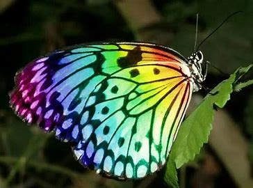
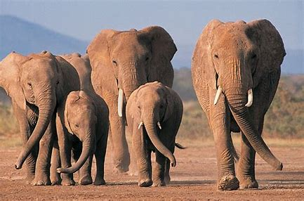
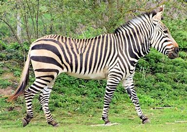
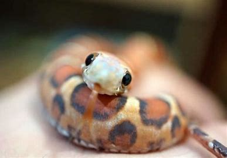

All About Animal
There are many different species of animals
Butterflies

- Butterflies are colour insects with that move in a figure 8 motion.
- They taste and smell with thier feet, which help them find suitable plants to lay
thier eggs
- They have compound eyes with 12,000 mini eyes, but they are nearsighted and can only see
10-12 feet away
- hey use tricks to avoid predators, such as camouflage, mimicry, or toxic chemicals
- They live on an all-liquid diet, mostly nectar, but some also drink blood, sweat, or tears
- They have a short lifespan, ranging from a few weeks to a few months, depending on the species
Lion
- Lions are the second largest cats in the world, after tigers, and the only ones with manes and tufts on their tails
- They are known as the "king of beasts" for their strength, courage, and majesty, and have been featured in many cultures and myths.
- They live mostly in Africa, but a small population survives in India, where they are protected in a national park.
- They prefer open habitats, such as grasslands, savannas, and scrublands, where they can hunt large prey, such as zebras, wildebeests, and buffaloes.
- They are social animals, living in groups called prides, which consist of one or more males and several females and their cubs.
- They communicate with each other through roars, growls, snarls, purrs, and body language, and can roar so loud that it can be heard up to 8 km away.
Elephants

- There are three different species of elephant – the African Savannah elephant, the African Forest elephant and the Asian elephant. Elephants are known for their large ears, tusks made of ivory and their trunks.
- Elephants are the world’s largest land animal! Male African elephants can reach 3m tall and weigh between 4,000 -7,500kg. Asian elephants are slightly smaller, reaching 2.7m tall and weighing 3,000 - 6,000kg.
- Elephants are the largest of all land animals in the world. There are two species, the African and the Asian Elephants. ELEPHANT FACTS AND INFORMATION Facts about Elephants, African Elephants and Asian Elephants. Elephant Anatomy, Habitat, Feeding, Reproduction and Elephant Predators Introduction to Elephants
Zebras

- Zebras are equids with unique black and white stripes that help them avoid pests and predators
- There are three species of zebras: plains, Grevy's, and mountain, each with different stripe patterns and habitats
- Zebras are constantly on the move, looking for fresh grass and water, and can survive up to five days without drinking
- Zebras are social animals that form herds, or dazzles, of up to 1,000 individuals, led by a dominant stallion
- Zebras are impressive climbers and can navigate rugged terrain, especially the mountain zebras that live in high altitudes
Snakes

- Most snakes live on land, but there are about 70 species of snakes that live in the Indian and Pacific oceans. Sea snakes and their cousins, kraits, are some of the most venomous snakes that exist, but they pose little threat to humans because they’re shy, gentle, and their fangs are too shortto do much damage.
- Snakes are elongated, limbless, carnivorous reptiles of the suborder Serpentes . Like all other squamates, snakes are ectothermic, amniote vertebrates covered in overlapping scales.
- species of snakes have skulls with several more joints than their lizard ancestors, enabling them to swallow prey much larger than their heads (cranial kinesis).
- Snakes are limbless, carnivorous reptiles that belong to the suborder Serpentes